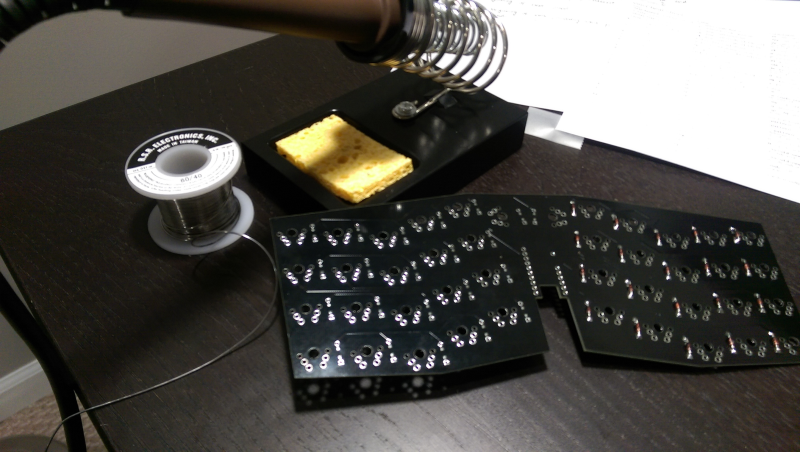
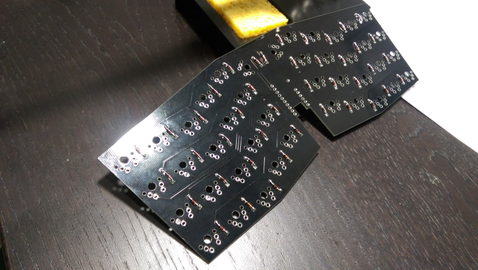
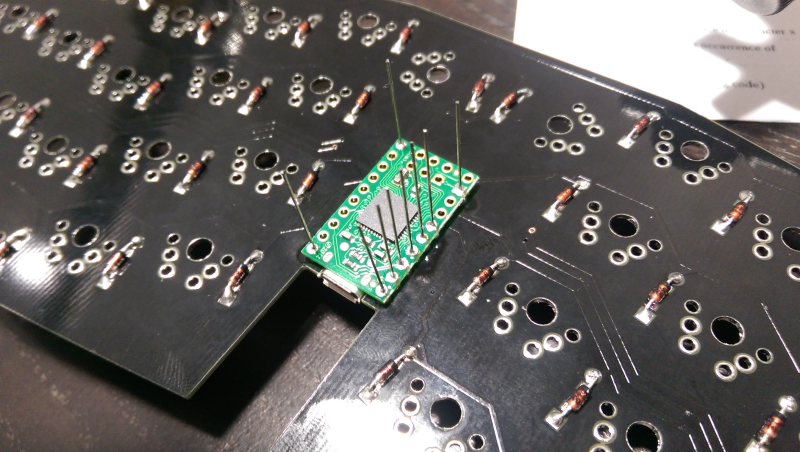
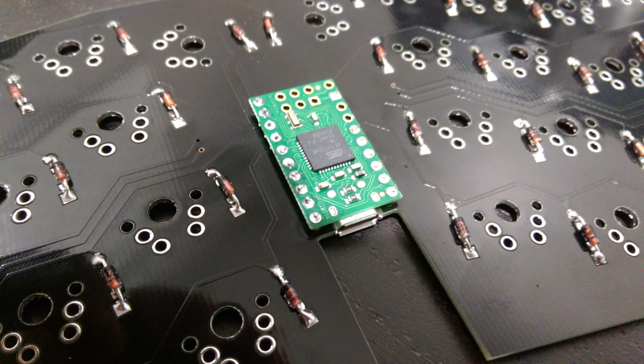
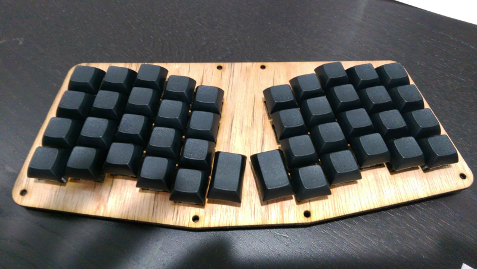
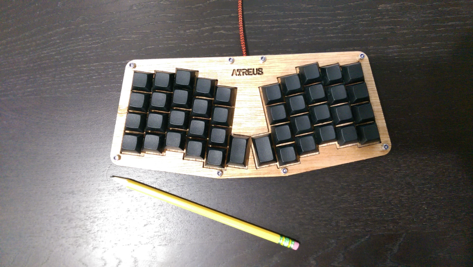

Atreus Building Experience
Here I write about my atreus keyboard builing experience. Atreus is a keyboard with very unique features like small form factor, freedom to program any key the way you want, ability to work with any OS without installing any driver and the best of all - the freedom to build it with your own hands the way you like it. So in this regard, it is the experience of personalizing your hardware!
Discovery
The way I discovered this keyboard is also interesting. A year or so ago, I started coding just for fun (I still do it for fun!). One thing that acted as an obstacle was my hunt-and-peck style of typing. I have always admired anyone who is typing effortlessly without looking at their keyboards. But the skill of touch-typing seemed too far out of my reach. In the past, I have tried learning the skill(mostly through online typing tutorials) but halfway though, I would fall short and give up.
Since I wanted to continue coding, I thought I must try learning touch-typing once again. So in the summer of 2017, I put everything aside and dived into learning to touch type using this online course. The course is free, thorough and probably the best one out there for my needs at the time. There are 30 or so lessons and about half way through, it gets into teaching programming keys as well. This was important feature to me when looking for a good course since as a coder you have to be as comfortable with the programming keys as the letter keys. I must say I progressed well with the course and probably the best progress I made when compared with any of my past attempts…and then I hit a stumbling roadblock.
The trouble started when I started to learn the brackets and math symbols. For some reason, I could not get hang of correct placement of my pinky when looking for { or + or =. I think with enough practice I might have learned the symbols too but for some reason I started looking for alternate keyboard designs. That’s when I came across Atreus design. In addition to the features of this keyboard that I listed earlier, another thing that sets it apart from the rest is its open-source hardware design. I immediately wanted to make it a part of my toolbox, except that I never soldered beyond one or two aweful joints!
Building
Anyways, I ordered the kit from Phil, the designer of the keyboard. I also ordered a soldering kit and few cheap breadboards from microcenter to learn soldering before starting the real project. The kit arrived and I immediately started working on it following the instructions that came along with the kit.
Here is the picture with half of the diodes(those little brown sprinkles on the right side of the board) soldered in.

Here I have finished soldering all the diodes.

Here the A-star microcontroller is being installed.

Here, the microcontroller is soldered onto the board.

Here, all the switches are installed. The woodwork to sand, lacquer and polish repeatedly was also an interesting experience.

Final Product
Here is the finished product. Its hard to ignore the simplicity and elegance of the design. I made few changes to the base key mappings (swapping SHIFT and BACKSPACE, FUNCTION and SPACE). I have been using it for couple months now and have got a good hang of it. You would notice that the key layout is column-wise instead of row-wise(common among most keyboards) which I found is easier on your fingers. There is no looking back now!

If you are interested..
I recommend to watch this Vim Meetup Talk by Loren Rogers. This talk was what inspired me to take the dive.